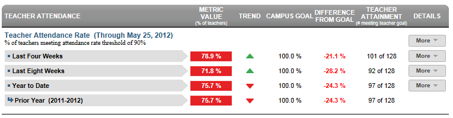

Dashboard Metrics


Teacher Attendance Rate
Background
District Dashboard Metrics
Classroom teachers play a huge role in student achievement. Teacher attendance effects students achievement more than any other teacher metric. In addition, during focus groups conducted with educators, the Teacher Attendance metric was considered useful by 97% of those surveyed.
Primary Metric
Teacher Attendance: percentage of teachers meeting a minimum attendance threshold with trend comparisons.
Related Metric
- Teacher Retention: percentage of teachers returning from the previous year.
User Interface
Dashboard Example
Figure 1 shows the Teacher Attendance Rate metric as seen on the district staff dashboard.

Figure 1 Ed-Fi Teacher Attendance Rate Metric
Status Definition
The Status indicator is determined by district goals. The Ed-Fi default teacher attendance threshold for each time frame is 90%.
Table 2 lists the Status indicators and trend comparisons as seen on the district staff dashboard.
Metric Indicator | Comparisons | |||
Metric Name | Sub-metric Name | Metric Status Indicator | Trend | Campus Attainment |
Teacher | Last Four Weeks | Red (Percentage) = If percentage of teachers meeting attendance rate is greater than or equal to district goal Green (Percentage) = if percentage of teachers meeting attendance rate is less than district goal | Current and prior four weeks (20 instructional days) | The number of campuses meeting their campus goal over the number of campuses with data for the metric |
Year to Date | Red (Percentage) = If percentage of teachers meeting attendance rate is greater than or equal to district goal Green (Percentage) = if percentage of teachers meeting attendance rate is less than district goal | Trend is not shown for the year to date | The number of campuses meeting their campus goal over the number of campuses with data for the metric | |
a) The Value column displays the number of teachers in attendance out of the total number of teachers in the district during the time frame.
Trend Definition
Table 3 lists the trend indicators for the Teacher Attendance Rate metric.
Trend Indicators: Objective is to indicate the Teacher Attendance Rate | |||
| Up green | Percentage is higher compared to previous time frame; upward trend is favorable | |
| Unchanged | + 5 percentage points | |
| Down Red | Percentage is lower compared to previous time frame; flag indicates unfavorable trend | |
Delta Definition
The Delta column is the absolute value of the difference between the campus attendance percentage for each campus and the campus goal. If the attendance percentage is below the campus goal, the delta percentage is displayed in red. If the attendance percentage is equal to or above the campus goal, the delta percentage is shown in black.
Periodicity
Best practice is to upload the data for this metric at least monthly.
Recommended Load Characteristics | |
Calendar | Throughout the school year |
Frequency of data load | Monthly, yearly |
Latency | 4 weeks |
Interchange schema | Interchange-StaffAssociation.xsd |
Tooltips
The standard tool tips for the metric definition, column headers, and help functions display for this metric.
The following are tooltips specific to the Teacher Attendance Rate metric:
- More indicates drill down to view ‘Teacher Attendance Detail'.
 is ‘No change from the prior period'
is ‘No change from the prior period' is ‘Getting worse from the prior period’
is ‘Getting worse from the prior period’ is 'Getting better from the prior period'
is 'Getting better from the prior period'
Business Rules
The Teacher Attendance Rate metric displays the percentage of teachers meeting the attendance rate threshold for the following time frames:
- Last Four Weeks
- Year to Date
The teacher attendance rate metric is computed based upon a campus-specific business rule for teacher attendance data.
Data Assumptions
- Data that tracks teacher absences is available
- Absent days are available.
- Reason for absence is available
Computed Values
The days a new teacher is not signed up to teach must be subtracted from the "number of work days" in the computation.
Table 5 defines how values are calculated for each sub-metric. The result of the calculation displays in the Status column on the district dashboard.
Metric Values | ||
% of teachers meeting attendance rate threshold | Last Four Weeks | Days in Attendance = (Number of teacher work days in 20 academic days) – (Total number of teacher absences) *100 Percent of teachers meeting threshold = (Total number of teachers meeting threshold) / (Total number of teachers in the district) *100 |
Year to Date | Days in Attendance = (total number of teacher work days in school year) – (total number of teacher absences in school year) * 100 Percent of teachers meeting threshold = (Total number of teachers meeting threshold) / (Total number of teachers in district) *100 | |
Data Anomalies
Data Anomalies
- Metrics are sensitive to when and how often the data is loaded.
- New teachers are likely to be missing attendance. If data exists, adjust the denominator in the calculation to reflect eligible days.
- If the school calendar changes, adjust the denominator to reflect eligible days.
- If the last data load was more than a month ago, create an icon to display the date of the last load.
Date of Refresh
Best practice is for the date of last data refresh to appear next the metric in the following format:
- (Through April 2010)
Implementation Considerations
Teacher Identity
Maintaining a correct and consistent teacher identity is important given that relevant teacher data resides in a number of systems: human resources systems, financial systems, teacher certification systems and class scheduling systems, just to name a few. Most systems use some sort of unique identifier. However, sometimes this identifier is entered incorrectly or sometimes different systems use different identifiers.
The UDM XML supports the interchange of multiple types of identifiers. The TeacherReference is a complex type within the UDM to maintain the referential integrity of the teacher identity (that is, ensuring that the data associated with each teacher is accurately associated with the right teacher). The complex type of the teacher reference assists with implementing the accurate matching algorithm to identify a teacher by utilizing any of the individual attributes (e.g. State Unique Staff ID, Staff ID, Name and Birth Date). For example, if the State Unique Staff ID is unknown, you can find the teachers' identity by their Staff ID, First Name, Last Name and Birth Date.
New Teachers
For new teachers, subtract the days the teacher is not signed up to teach from the number of work days in the time frame.
Classification of Days as Non-Work Days
For the computation of the number of work days, use the total count of work days in a period or utilize the school calendar to identify specific work days for the time frame as the denominator for the percentage. The latter is a more accurate approach to calculating the metric with the caveat that this requires frequent uploading of data throughout the school year.
Frequency of Uploading Data
The metric computation implementation may vary depending on the periodicity of loading the data. For example, a daily load deals only with loading a single day (i.e., the last instructional day). Less frequent uploads require loading of multiple days since the date of the last load.
Drill Downs
Drill Down Views
The dashboards include the option to drill down and see more detail that is associated with a metric. Table 6 lists the drill down views that are recommended for this metric.
| Historical | Historical absences by year. (future implementation) | |
| Campus List | List of campuses and whether or not they meet their goal for this metric for the specified period. |